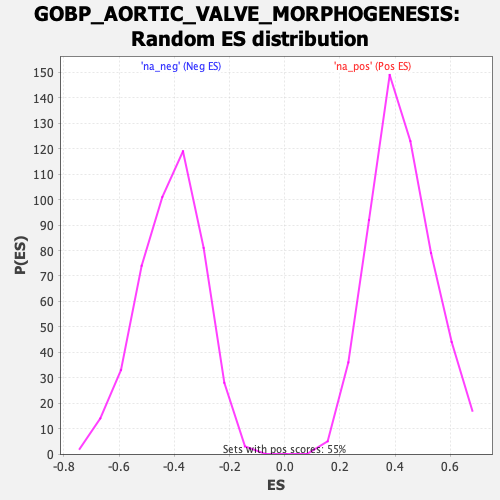

| | | Dataset | DE_genes |
| Phenotype | NoPhenotypeAvailable |
| Upregulated in class | na_pos |
| GeneSet | GOBP_AORTIC_VALVE_MORPHOGENESIS |
| Enrichment Score (ES) | 0.8272104 |
| Normalized Enrichment Score (NES) | 1.9594002 |
| Nominal p-value | 0.0 |
| FDR q-value | 0.0012116076 |
| FWER p-Value | 0.014 |
Table: GSEA Results Summary
 Fig 1: Enrichment plot: GOBP_AORTIC_VALVE_MORPHOGENESIS
Fig 1: Enrichment plot: GOBP_AORTIC_VALVE_MORPHOGENESIS
Profile of the Running ES Score & Positions of GeneSet Members on the Rank Ordered List
| SYMBOL | RANK IN GENE LIST | RANK METRIC SCORE | RUNNING ES | CORE ENRICHMENT | | 1 | SNAI2 | 35 | 225.456 | 0.1415 | Yes |
| 2 | NOTCH1 | 75 | 187.352 | 0.2582 | Yes |
| 3 | EMILIN1 | 94 | 172.851 | 0.3674 | Yes |
| 4 | ROBO1 | 127 | 158.325 | 0.4661 | Yes |
| 5 | GATA3 | 154 | 143.775 | 0.5560 | Yes |
| 6 | SLIT2 | 247 | 113.755 | 0.6209 | Yes |
| 7 | TGFB1 | 315 | 95.879 | 0.6766 | Yes |
| 8 | HEY1 | 459 | 73.231 | 0.7112 | Yes |
| 9 | TIE1 | 509 | 67.207 | 0.7501 | Yes |
| 10 | SNAI1 | 547 | 62.736 | 0.7871 | Yes |
| 11 | SOX9 | 548 | 62.648 | 0.8272 | Yes |
| 12 | HEYL | 1455 | 25.510 | 0.7655 | No |
| 13 | TWIST1 | 2007 | 17.906 | 0.7296 | No |
| 14 | ROCK1 | 2493 | 13.713 | 0.6966 | No |
| 15 | SMAD6 | 2736 | 12.069 | 0.6835 | No |
| 16 | ROBO2 | 3027 | 10.188 | 0.6650 | No |
| 17 | SLIT3 | 3705 | 7.328 | 0.6114 | No |
| 18 | ELN | 4681 | 4.566 | 0.5304 | No |
| 19 | DLL4 | 4961 | 3.932 | 0.5089 | No |
| 20 | TBX20 | 5413 | 3.102 | 0.4721 | No |
| 21 | RB1 | 7200 | -4.091 | 0.3209 | No |
| 22 | NKX2-5 | 9431 | -13.720 | 0.1377 | No |
| 23 | EFNA1 | 9619 | -15.354 | 0.1314 | No |
| 24 | NFATC1 | 11172 | -65.875 | 0.0400 | No |
Table: GSEA details [plain text format]

Fig 2: GOBP_AORTIC_VALVE_MORPHOGENESIS: Random ES distribution
Gene set null distribution of ES for GOBP_AORTIC_VALVE_MORPHOGENESIS